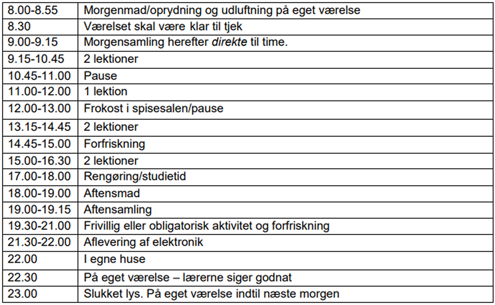
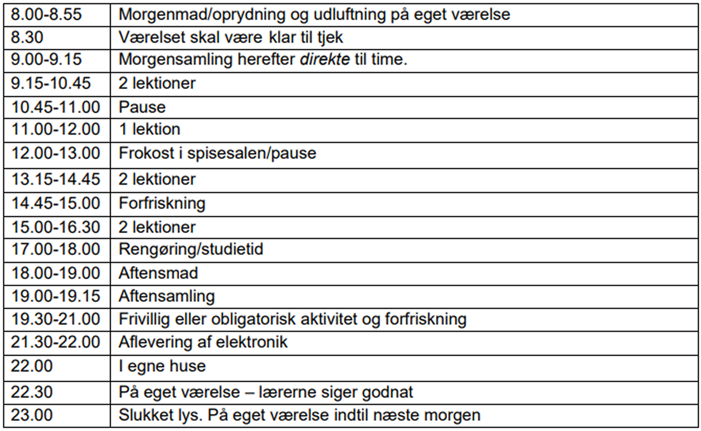

Efterskoleliv
Hvad laver man egentlig, når man går på efterskole? Hvordan ser hverdagen ud? Hvad laver man i sin fritid? Hvornår skal man i seng? Hvad får man at spise? Alt det og meget mere får du svar på her.
Fællesaktiviteter
Morgensamling
En vigtig del af det at være på HE er vores morgensamlinger. Hver morgen mødes vi i Samlingssalen, hvor vi synger en sang og bliver inspirerede af korte oplæg om livet og det, der rører sig. To dage om ugen ser vi dagens nyheder.
Fagdage
Hver mandag har vi fagdag, hvor hele dagen afsættes til fordybelse i forskellige fag og emner. Det kan være i almindelige fag, linjefag, bevægelsesfag, praksisk-musiske fag, kreative fag, uddannelsesfag osv.
Sang- og fortælletime
Alt det som kan give os en følelse og samhørighed.Her får I fortællinger. Personlige fortællinger, gamle myter, aktuelle emner, musikkens historie, Danmark gennem tiderne, etiske spørgsmål – og alt mulig andet. Og så synger vi en masse! Sangene er alt lige fra gamle folkeviser til de sidste nye hits både på dansk og engelsk. Sangene fortæller en historie og binder os sammen som mennesker. Med andre ord – almen dannelse og viden bliver listet ind under huden i disse ugentlige lektioner, og forhåbentlig får du øjnene op for nye aspekter af det at være menneske.
Bevægelsesfag
Det er vigtigt at bruge kroppen! I bevægelsesfag kommer vi ud af hovedet og ned i kroppen, og vi gør det sammen. Det gør vi på mange forskellige måder, og for det meste er det ikke som i en helt almindelig idrætstime i en folkeskole. Det er mere i form af teambuildings – og samarbejdsøvelser, koordieringsøvelser, fælleslege og danse. Det må nemlig gerne være sjovt at bevæge sig!
Ejerskabet
Ejerskabet er vores demokratifag, hvor alle elever og lærere mødes for at tale om hverdagen på skolen. Det er skolens elevråd, der sammen med et par lærere står for Ejerskabet. Her kan stort og småt tages op, og det er en god mulighed for at få indflydelse på hverdagen. Her lærer du, hvordan en demokratisk proces foregår, og hvad der skal til for, at alle i et fællesskab får muligheden for at blive hørt. Det er nemlig sådan en skole, vi gerne vil have. En hvor alle har en stemme!
Aftenarrangementer
Fælles for disse er at de foregår efter aftensmad. Det kan være en koncert, et foredrag, et kontaktgruppearrangement, et spontant planlagt program og meget andet.
K-grupper
Noget om k-grupper
En typisk dag på HE
 

Sådan bor vi
På HE har vi 2- og 3-mands- og få 4-mandsværelser. Du får dit eget skab med nøgle til. Du og dine roomies bruger samme nøgle til døren, men skabet er dit private.